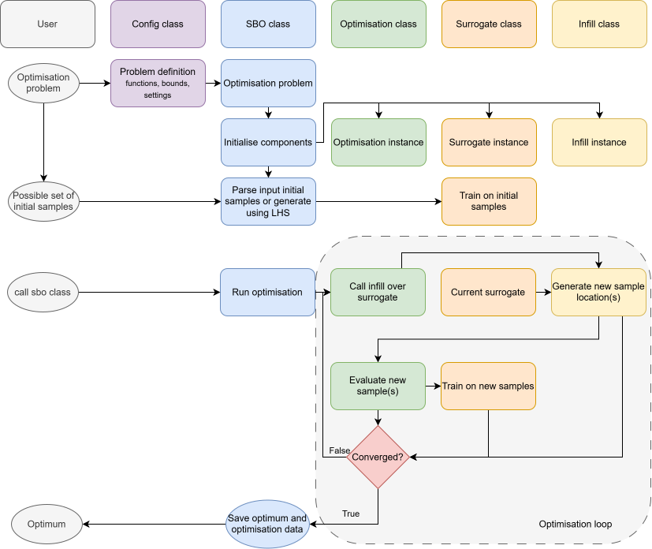
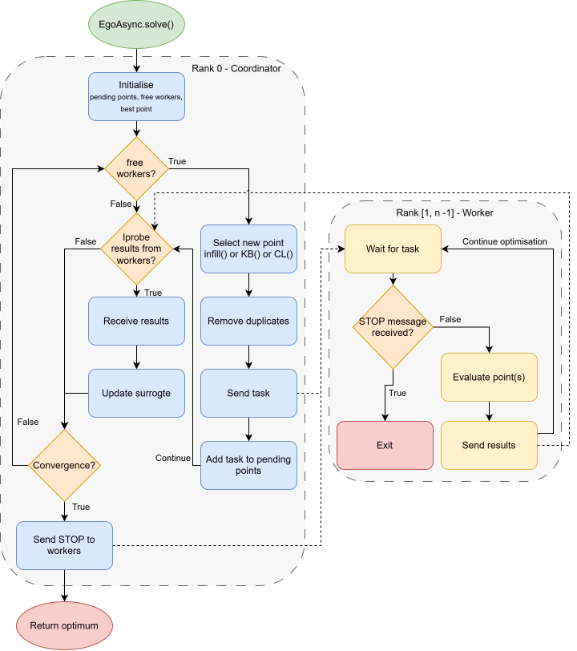

Architecture¶
This page explains how the parts of the package work together. The classes themselves are documented in the API Reference.
Package Layout¶
| Path | Contents |
|---|---|
sbo/SBO.py |
SBO: creates the components, provides the initial samples, runs and plots. |
sbo/utils/Config.py |
Config: the problem definition and settings (singleton). |
sbo/utils/validate_settings.py |
Checks user settings against the default settings. |
sbo/utils/Logger.py |
setup_logger and get_logger. |
sbo/utils/Base.py |
Base: stores the config; base class of every component. |
sbo/surrogate/ |
Surrogate models, all derived from SurrogateBase (surrogate/Base.py). |
sbo/infill/ |
Infill strategies, all derived from InfillBase (infill/Base.py). |
sbo/optimisation/ |
Optimisation algorithms, all derived from OptimisationBase (optimisation/Base.py). |
sbo/DefaultSettings/ |
The default settings of every component, one *_DEFAULT_SETTINGS dict each. |
sbo/constants/ |
Constants, e.g. the infill strategies that support expensive constraints. |
sbo/benchmarks/ |
Multi-fidelity benchmark problems, one MultiFidelityFunction each (benchmarks/base.py). |
Components¶
flowchart TB
Config("Config<br/>bounds, functions, settings,<br/>used_algorithms, rng")
SBO("SBO")
Surrogate("Surrogate<br/>(SurrogateBase)")
Infill("Infill strategy<br/>(InfillBase)")
Optimisation("Optimisation algorithm<br/>(OptimisationBase)")
SBO -- creates by name --> Surrogate
SBO -- creates by name --> Infill
SBO -- "creates by name;<br/>run() calls it" --> Optimisation
Optimisation -- "infill(surrogate)" --> Infill
Infill -- predict, get_optimum --> Surrogate
Optimisation -- add_training_data, train --> Surrogate
Config -. read by all .-> SBO
%% Colours of the draw.io diagrams: docs/javascripts/mermaid_style.js styles these classes
classDef config stroke-width:1px
classDef sbo stroke-width:1px
classDef optimisation stroke-width:1px
classDef surrogate stroke-width:1px
classDef infill stroke-width:1px
class Config config
class SBO sbo
class Optimisation optimisation
class Surrogate surrogate
class Infill infillSBOcreates the three components from the names inconfig.used_algorithms. It importssbo.<type>.<Name>and takes the class<Name>from it, so a component's file must have the same name as its class. It then provides the initial samples (Latin hypercube, or the samples passed by the user) to the surrogate, andrun()calls the optimisation algorithm.- The optimisation algorithm owns the loop. It asks the infill strategy for new points, evaluates them with the objective functions, adds them to the surrogate, and checks the stopping criteria.
- The infill strategy only reads the surrogate: it returns new points to evaluate and an infill value.
- The surrogate stores the samples per fidelity, trains on them (lazily, when a prediction is needed after new data), and predicts values and, depending on the base class, variances.
Configis shared by all of them: every component derives fromutils.Base, which storesself.config.
Data Flow¶
The diagram below follows the data through a run. Each column is the user or one of the classes, so it shows which class
handles each step: the problem definition goes into Config, SBO creates the components and trains the surrogate on
the initial samples, and the optimisation algorithm then runs the loop until it converges and returns the optimum.

Data flow through SBO: from the problem definition to the optimum.
Conditional Components¶
Some components decide in __new__ that another class fits better, and return an instance of that class instead. They
update config.used_algorithms accordingly, and SBO takes its copy of the used algorithms only after the components
are created, so it does not see this as a change:
| Class | Condition | Returns | Why changed |
|---|---|---|---|
HK |
One fidelity | KRG |
Using a single-fidelity, results in HK reducing to KRG. |
FilteredGEI |
One fidelity | GEI |
Using the multi-fidelity FilteredGEI with one fidelity is equivalent to GEI. |
EgoMPI, EgoAsync |
No MPI or fewer than two ranks | EgoSequential |
Without MPI or fewer than two ranks, the MPI-based algorithms are equal to EgoSequential. |
If the user changes config.used_algorithms (or calls sbo.update_used_algorithms) after creating the SBO, the
changed components are recreated at the next run(). A new surrogate keeps the training data of the old one.
The Optimisation Loop¶
EgoSequential runs the loop in its simplest form, as in the optimisation loop of the data flow diagram above. Each
iteration it asks the infill strategy for new tasks, removes duplicates, evaluates the points, adds them to the
surrogate and retrains it, and then stores the iteration data and checks the stopping criteria. After the loop it
evaluates the surrogate optimum on the HF function, and returns the best of the HF samples and that point.
The multi-point algorithms change who evaluates the points and when:
EgoMPIproposes up tonumber_new_pointstasks per iteration (the extra ones with Kriging Believer or Constant Liar), scatters them over all ranks, gathers the results, and then continues as above.EgoAsyncruns the loop on rank 0 only. Ranks 1 to N-1 are workers: as soon as one is free it gets a new task, and every received result is added to the surrogate and stored as an "iteration" (keyed by a zero-padded counter). After a stopping criterion is met, rank 0 stops the workers, adds the results that still arrive, and then evaluates the surrogate optimum.
The diagram below shows the program flow of EgoAsync.solve(). The solid arrows are the flow within a rank, and the
dotted lines the MPI messages between the coordinator (rank 0) and the workers (ranks 1 to n-1): tasks, results and the
stop message.

Program flow of EgoAsync, with the MPI messages between the coordinator and the workers.
The stopping criteria are described in Settings and Stopping Criteria; the data stored per iteration in Results, Plots and Logs.
Data Structures¶
These structures are used throughout the code:
| Name | Shape | Used for |
|---|---|---|
| Point | {"coord": np.ndarray, "fid": int}, plus "value": float once evaluated, and "start_time", "end_time", "mpi_rank" |
A location to evaluate, or an evaluated sample. fid 0 is the HF function. |
| Task | list[Point] |
Points that are evaluated together by one worker, e.g. the same location at several fidelities for nested sampling. |
| Tasks | list[Task] |
What an infill strategy returns (with the infill value): tuple[list[list[dict]], float]. |
| Samples | {fid: list[Point]} |
surrogate.samples: the training data per fidelity. |
| Optimisation data | {iteration: {...}, "init": ..., "total": ..., ...} |
Everything stored during a run; see Results. |
Config¶
Config holds the problem definition and the settings, and is a singleton: Config.get_instance() returns it from
anywhere, and creating a new Config re-initialises the same instance.
-
Objective functions are wrapped when the config is created, so they always return a 1D float array (users may return a plain float). Code reads the value as
config.functions[fid](x)[0]. -
Settings are validated against the default settings of the general settings and of the three selected algorithms (
validate_settings), and stored as a nested dict: -
Random numbers:
config.rngis anp.random.Generatorseeded withrandom_seed; use it for every random choice in a component, so runs stay reproducible.
Retrieving Settings¶
A general setting can be read in any of these ways:
value = config.get("random_seed")
value = config.get_setting("random_seed")
value = config["random_seed"]
A setting of one of the algorithms:
value = config.get("infill.g")
value = config.get_setting("g", algorithm="infill")
value = config["infill"]["g"]
value = config["infill.g"]
config.get(key) raises a KeyError for an unknown key; config.get(key, default, strict=False) returns the default
instead.